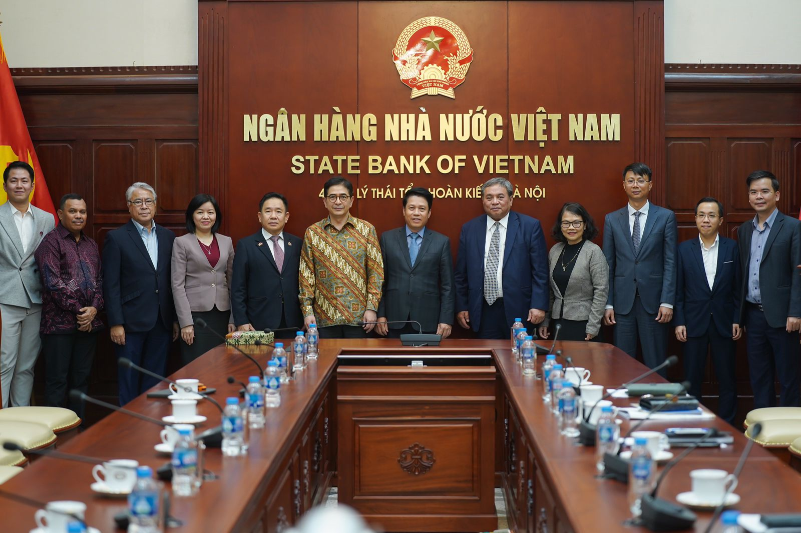

KERJASAMA INTERNASIONAL: INDONESIA X VIETNAM
💼💲Bidang Perdagangan & Ekonomi✨💎
- Perdagangan dan investasi adalah salah satu bagian penting dalam hubungan antara Indonesia dan Vietnam. Kedua negara memiliki tujuan untuk meningkatkan nilai perdagangan mereka hingga mencapai $10 miliar. Ini berarti mereka ingin saling menjual lebih banyak barang dan jasa agar ekonomi masing-masing bisa tumbuh lebih baik. Dengan meningkatkan perdagangan, Indonesia dan Vietnam berharap bisa saling menguntungkan dan memberikan manfaat bagi masyarakat di kedua negara.
- Indonesia mengekspor banyak barang ke Vietnam, seperti bahan kimia yang digunakan dalam industri, mesin-mesin, serta minyak dan gas. Barang-barang ini sangat penting bagi Vietnam karena membantu mereka dalam proses produksi. Di sisi lain, Indonesia juga mengimpor beberapa barang dari Vietnam, seperti beras, bahan tekstil, dan produk elektronik. Beras dari Vietnam sangat populer di Indonesia karena rasanya yang enak, dan produk elektronik dari Vietnam sering kali memiliki harga yang lebih terjangkau. Hal ini membuat masyarakat Indonesia bisa mendapatkan barang yang berkualitas dengan harga yang bersahabat.
- Selain perdagangan, investasi juga menjadi fokus penting dalam hubungan kedua negara. Banyak perusahaan Indonesia, seperti perusahaan yang bergerak di bidang perkebunan dan energi, telah berinvestasi di Vietnam. Ini berarti mereka membuka usaha atau proyek di sana untuk mendapatkan keuntungan. Di sisi lain, Vietnam juga tertarik untuk berinvestasi di Indonesia, terutama di sektor properti dan energi. Hal ini menunjukkan bahwa kedua negara saling percaya dan ingin bekerja sama untuk kemajuan ekonomi mereka. Dengan adanya kerjasama dalam perdagangan dan investasi ini, diharapkan masyarakat di kedua negara dapat merasakan manfaatnya melalui lebih banyak lapangan pekerjaan dan barang yang lebih beragam.
